Si salva da sola
Azione in prima persona, veloce. Niente spada né armatura: solo il dardo incantato, una piccola cometa che si carica, rimbalza, brucia, gela e addormenta, secondo i doni che porti.
C'era una volta una principessa…
…che si salvò da sola.
Stanca di aspettare il cavaliere che la salvi, la principessa esce da sola dalla torre e scende il castello piano dopo piano, con un solo incantesimo: il dardo incantato. Ogni discesa è diversa, ogni stanza è una prova, e prima di ogni scala c'è un guardiano.
In cima alla torre più alta del castello una principessa aspetta il cavaliere che la salvi, come nelle fiabe. Aspetta tanto. I cavalieri partono, ma nessuno arriva fin lassù.
Un mattino decide che basta. Spinge il portone e comincia a scendere, piano dopo piano, con un solo incantesimo in mano: il dardo incantato. I cavalieri li ritroverà lungo la strada, accasciati contro i muri, con le loro promesse.
Nessuno verrà a salvarla. Si salva da sola.
Un FPS d'azione in voxel, a piani procedurali, col cuore di un roguelite: scendi, raccogli doni, cadi, e ricominci più forte.
Azione in prima persona, veloce. Niente spada né armatura: solo il dardo incantato, una piccola cometa che si carica, rimbalza, brucia, gela e addormenta, secondo i doni che porti.
Entri, le porte si chiudono e i nemici escono dal fumo, a ondate. Si riaprono solo quando cade l'ultimo. Spuntoni, feritoie, specchi stregati: attenta a dove metti i piedi.
124 doni da raccogliere: cambiano il dardo, il passo, i  . Alcuni danno molto e tolgono qualcosa. Scegli bene cosa portarti giù.
. Alcuni danno molto e tolgono qualcosa. Scegli bene cosa portarti giù.
Niente inventario: un oggetto in mano, una cianfrusaglia in tasca, i tuoi e il mana. Il resto lo porti addosso, e si vede.
Stanze, corridoi, nemici e tesori nascono dal seed della partita: ogni discesa è un castello diverso, e lo stesso seed rifà lo stesso castello.
Muri a cui bussare, stanze dorate chiuse a chiave, porte che non dovrebbero esserci. E una storia che si scopre solo scendendo.
124 doni, ognuno con la sua fiaba e la sua icona. Ogni dono che tocca il dardo ci lascia il suo segno, e tanti si vedono addosso alla principessa.


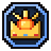
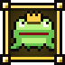
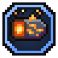
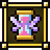

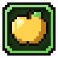
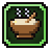
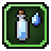
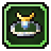
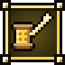
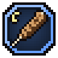
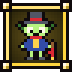
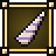
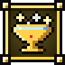
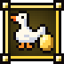
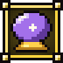
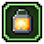
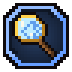
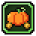
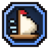
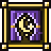
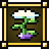
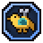
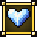

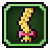
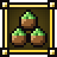
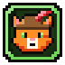
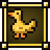
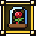
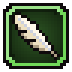
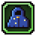
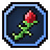
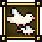
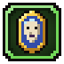
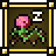
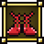
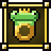
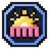
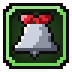
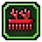
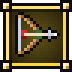
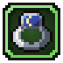
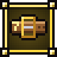
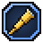
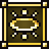
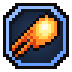
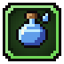
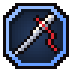
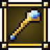
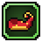

E più in basso, doni di cui è meglio non parlare.
Ogni discesa finisce nella torre, e la torre ricorda.
Cavalieri e mostri lasciano promesse. Tornata nella torre le scrivi sulla lavagnetta, e diventano ricordi: cose per la tua stanza che ti aiutano nella discesa dopo.
Al posto del salto c'è un incantesimo: il balzo, per cominciare. Gli altri 6 si imparano seguendo le fiabe, scendendo e studiando nella torre.
Sul leggio c'è il diario della principessa. Scrivi una pagina della fiaba di domani, e il piano dove stai per scendere andrà come dice lei.
Screenshot della versione 0.12.1, con l'interfaccia vera.


Gratis, per Windows e Linux. È un prototipo e cresce di continuo: il gioco ti avvisa quando esce una versione nuova.
Scarica da itch.ioWindows · Linux · gratisVersione 0.12.1, uscita il 17 ottobre 2026
Serve Windows 10 o 11, o Linux a 64 bit, e una scheda video che regga Vulkan o Direct3D 12. Si gioca con mouse e tastiera o col controller. In italiano e in inglese.
Runess è una fiaba, ma non per bambini: tratta temi che possono turbare.